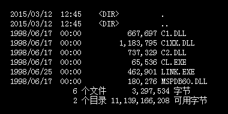
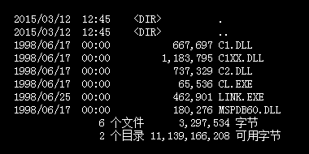

C语言数据输出大汇总以及轻量进阶
在C语言中，有三个函数可以用来在显示器上输出数据，它们分别是：
printf() 是最灵活、最复杂、最常用的输出函数，完全可以替代 puts() 和 putchar()，大家一定要掌握。前面的章节中我们已经介绍了 printf() 的基本用法，本节将重点介绍 printf() 的高级用法。
假如现在老师要我们输出一个 4×4 的整数矩阵，为了增强阅读性，数字要对齐，怎么办呢？我们显然可以这样做：
类似的需求随处可见，整齐的格式会更加美观，让人觉得生动有趣。其实，我们大可不必像上面一样，printf() 可以更好的控制输出格式。更改上面的代码：
printf() 格式控制符的完整形式如下：
type 这一项必须有，这意味着输出时必须要知道是什么类型。
2) width 表示最小输出宽度，也就是至少占用几个字符的位置；例如，
当输出结果的宽度不足 width 时，以空格补齐（如果没有指定对齐方式，默认会在左边补齐空格）；当输出结果的宽度超过 width 时，width 不再起作用，按照数据本身的宽度来输出。
下面的代码演示了 width 的用法：
3) .precision 表示输出精度，也就是小数的位数。
另外，.precision 也可以用于整数和字符串，但是功能却是相反的：
请看下面的例子：
4) flag 是标志字符。例如，
请看下面的例子：
在 Linux 或者 Mac OS 下运行该程序，会发现第一个 printf() 并没有立即输出，而是等待 5 秒以后，和第二个 printf() 一起输出了，请看下面的动图演示：

我们不妨修改一下代码，在第一个 printf() 的最后添加一个换行符，如下所示：

为什么一个换行符
其实，这一切都是输出缓冲区（缓存）在作怪！
从本质上讲，printf() 执行结束以后数据并没有直接输出到显示器上，而是放入了缓冲区，直到遇见换行符
以上测试的是 Linux 和 Mac OS，我们不妨再测试一下 Windows，请看下面的代码：
编译并运行程序，会发现第一个 printf() 首先输出（程序运行后立即输出），等待 5 秒以后，第二个 printf() 才输出，请看下面的动画演示：
在第一个 printf() 的最后添加一个换行符，情况也是一样的，第一个 printf() 从来不会和第二个 printf() 一起输出。
你看，Windows 和 Linux、Mac OS 的情况又不一样。这是因为，Windows 和 Linux、Mac OS 的缓存机制不同。更加深入的内容，我们将在本章的《进入缓冲区（缓存）的世界，破解一切与输入输出有关的疑难杂症》中详细讲解。
要想破解 printf() 输出的问题，必须要了解缓存，它能使你对输入输出的认识上升到一个更高的层次，以后不管遇到什么疑难杂症，都能迎刃而解。可以说，输入输出的“命门”就在于缓存。
printf() 的这些格式规范不是“小把戏”，优美的输出格式随处可见，例如，dos 下的 dir 命令，会整齐地列出当前目录下的文件，这明显使用了右对齐，还指定了宽度。

- puts()：只能输出字符串，并且输出结束后会自动换行，在《第一个C语言程序》中已经进行了介绍。
- putchar()：只能输出单个字符，在《在C语言中使用英文字符》中已经进行了介绍。
- printf()：可以输出各种类型的数据，在前面的很多章节中都进行了介绍。
printf() 是最灵活、最复杂、最常用的输出函数，完全可以替代 puts() 和 putchar()，大家一定要掌握。前面的章节中我们已经介绍了 printf() 的基本用法，本节将重点介绍 printf() 的高级用法。
对于初学者，这一节的内容可能有些繁杂，如果你希望加快学习进度，尽早写出有趣的代码，也可以跳过这节，后面遇到不懂的 printf() 用法再来回顾。首先汇总一下前面学到的格式控制符：
| 格式控制符 | 说明 |
|---|---|
| %c | 输出一个单一的字符 |
| %hd、%d、%ld | 以十进制、有符号的形式输出 short、int、long 类型的整数 |
| %hu、%u、%lu | 以十进制、无符号的形式输出 short、int、long 类型的整数 |
| %ho、%o、%lo | 以八进制、不带前缀、无符号的形式输出 short、int、long 类型的整数 |
| %#ho、%#o、%#lo | 以八进制、带前缀、无符号的形式输出 short、int、long 类型的整数 |
|
%hx、%x、%lx %hX、%X、%lX |
以十六进制、不带前缀、无符号的形式输出 short、int、long 类型的整数。如果 x 小写，那么输出的十六进制数字也小写；如果 X 大写，那么输出的十六进制数字也大写。 |
|
%#hx、%#x、%#lx %#hX、%#X、%#lX |
以十六进制、带前缀、无符号的形式输出 short、int、long 类型的整数。如果 x 小写，那么输出的十六进制数字和前缀都小写；如果 X 大写，那么输出的十六进制数字和前缀都大写。 |
| %f、%lf | 以十进制的形式输出 float、double 类型的小数 |
|
%e、%le %E、%lE |
以指数的形式输出 float、double 类型的小数。如果 e 小写，那么输出结果中的 e 也小写；如果 E 大写，那么输出结果中的 E 也大写。 |
|
%g、%lg %G、%lG |
以十进制和指数中较短的形式输出 float、double 类型的小数，并且小数部分的最后不会添加多余的 0。如果 g 小写，那么当以指数形式输出时 e 也小写；如果 G 大写，那么当以指数形式输出时 E 也大写。 |
| %s | 输出一个字符串 |
printf() 的高级用法
通过前面的学习，相信你已经熟悉了 printf() 的基本用法，但是这还不足以把它发挥到极致，printf() 可以有更加炫酷、更加个性、更加整齐的输出形式。假如现在老师要我们输出一个 4×4 的整数矩阵，为了增强阅读性，数字要对齐，怎么办呢？我们显然可以这样做：
#include <stdio.h>
int main()
{
int a1=20, a2=345, a3=700, a4=22;
int b1=56720, b2=9999, b3=20098, b4=2;
int c1=233, c2=205, c3=1, c4=6666;
int d1=34, d2=0, d3=23, d4=23006783;
printf("%d %d %d %d\n", a1, a2, a3, a4);
printf("%d %d %d %d\n", b1, b2, b3, b4);
printf("%d %d %d %d\n", c1, c2, c3, c4);
printf("%d %d %d %d\n", d1, d2, d3, d4);
return 0;
}
运行结果：
20 345 700 22 56720 9999 20098 2 233 205 1 6666 34 0 23 23006783
矩阵一般在大学的《高等数学》中会讲到，m×n 的数字矩阵可以理解为把 m×n 个数字摆放成 m 行 n 列的样子。看，这是多么地自虐，要敲那么多空格，还要严格控制空格数，否则输出就会错位。更加恶心的是，如果数字的位数变了，空格的数目也要跟着变。例如，当 a1 的值是 20 时，它后面要敲八个空格；当 a1 的值是 1000 时，它后面就要敲六个空格。每次修改整数的值，都要考虑修改空格的数目，逼死强迫症。
类似的需求随处可见，整齐的格式会更加美观，让人觉得生动有趣。其实，我们大可不必像上面一样，printf() 可以更好的控制输出格式。更改上面的代码：
#include <stdio.h>
int main()
{
int a1=20, a2=345, a3=700, a4=22;
int b1=56720, b2=9999, b3=20098, b4=2;
int c1=233, c2=205, c3=1, c4=6666;
int d1=34, d2=0, d3=23, d4=23006783;
printf("%-9d %-9d %-9d %-9d\n", a1, a2, a3, a4);
printf("%-9d %-9d %-9d %-9d\n", b1, b2, b3, b4);
printf("%-9d %-9d %-9d %-9d\n", c1, c2, c3, c4);
printf("%-9d %-9d %-9d %-9d\n", d1, d2, d3, d4);
return 0;
}
输出结果：
20 345 700 22 56720 9999 20098 2 233 205 1 6666 34 0 23 23006783这样写起来更加方便，即使改变某个数字，也无需修改 printf() 语句，增加或者减少空格数目。
%-9d中，d表示以十进制输出，9表示最少占9个字符的宽度，宽度不足以空格补齐，-表示左对齐。综合起来，%-9d表示以十进制输出，左对齐，宽度最小为9个字符。大家可以亲自试试%9d的输出效果。printf() 格式控制符的完整形式如下：
%[flag][width][.precision]type
[ ] 表示此处的内容可有可无，是可以省略的。1) type 表示输出类型，比如 %d、%f、%c、%lf，type 就分别对应 d、f、c、lf；再如，
%-9d中 type 对应 d。type 这一项必须有，这意味着输出时必须要知道是什么类型。
2) width 表示最小输出宽度，也就是至少占用几个字符的位置；例如，
%-9d中 width 对应 9，表示输出结果最少占用 9 个字符的宽度。当输出结果的宽度不足 width 时，以空格补齐（如果没有指定对齐方式，默认会在左边补齐空格）；当输出结果的宽度超过 width 时，width 不再起作用，按照数据本身的宽度来输出。
下面的代码演示了 width 的用法：
#include <stdio.h>
int main(){
int n = 234;
float f = 9.8;
char c = '@';
char *str = "http://c.biancheng.net";
printf("%10d%12f%4c%8s", n, f, c, str);
return 0;
}
运行结果：
234 9.800000 @http://c.biancheng.net
对输出结果的说明：
- n 的指定输出宽度为 10，234 的宽度为 3，所以前边要补上 7 个空格。
- f 的指定输出宽度为 12，9.800000 的宽度为 8，所以前边要补上 4 个空格。
- str 的指定输出宽度为 8，"http://c.biancheng.net" 的宽度为 22，超过了 8，所以指定输出宽度不再起作用，而是按照 str 的实际宽度输出。
3) .precision 表示输出精度，也就是小数的位数。
- 当小数部分的位数大于 precision 时，会按照四舍五入的原则丢掉多余的数字；
- 当小数部分的位数小于 precision 时，会在后面补 0。
另外，.precision 也可以用于整数和字符串，但是功能却是相反的：
- 用于整数时，.precision 表示最小输出宽度。与 width 不同的是，整数的宽度不足时会在左边补 0，而不是补空格。
- 用于字符串时，.precision 表示最大输出宽度，或者说截取字符串。当字符串的长度大于 precision 时，会截掉多余的字符；当字符串的长度小于 precision 时，.precision 就不再起作用。
请看下面的例子：
#include <stdio.h>
int main(){
int n = 123456;
double f = 882.923672;
char *str = "abcdefghi";
printf("n: %.9d %.4d\n", n, n);
printf("f: %.2lf %.4lf %.10lf\n", f, f, f);
printf("str: %.5s %.15s\n", str, str);
return 0;
}
运行结果：
n: 000123456 123456 f: 882.92 882.9237 882.9236720000 str: abcde abcdefghi对输出结果的说明：
- 对于 n，.precision 表示最小输出宽度。n 本身的宽度为 6，当 precision 为 9 时，大于 6，要在 n 的前面补 3 个 0；当 precision 为 4 时，小于 6，不再起作用。
- 对于 f，.precision 表示输出精度。f 的小数部分有 6 位数字，当 precision 为 2 或者 4 时，都小于 6，要按照四舍五入的原则截断小数；当 precision 为 10 时，大于 6，要在小数的后面补四个 0。
- 对于 str，.precision 表示最大输出宽度。str 本身的宽度为 9，当 precision 为 5 时，小于 9，要截取 str 的前 5 个字符；当 precision 为 15 时，大于 9，不再起作用。
4) flag 是标志字符。例如，
%#x中 flag 对应 #，%-9d中 flags 对应-。下表列出了 printf() 可以用的 flag：| 标志字符 | 含 义 |
|---|---|
| - |
-表示左对齐。如果没有，就按照默认的对齐方式，默认一般为右对齐。 |
| + | 用于整数或者小数，表示输出符号（正负号）。如果没有，那么只有负数才会输出符号。 |
| 空格 | 用于整数或者小数，输出值为正时冠以空格，为负时冠以负号。 |
| # |
|
请看下面的例子：
#include <stdio.h>
int main(){
int m = 192, n = -943;
float f = 84.342;
printf("m=%10d, m=%-10d\n", m, m); //演示 - 的用法
printf("m=%+d, n=%+d\n", m, n); //演示 + 的用法
printf("m=% d, n=% d\n", m, n); //演示空格的用法
printf("f=%.0f, f=%#.0f\n", f, f); //演示#的用法
return 0;
}
运行结果：
m= 192, m=192 m=+192, n=-943 m= 192, n=-943 f=84, f=84.对输出结果的说明：
-
当以
%10d输出 m 时，是右对齐，所以在 192 前面补七个空格；当以%-10d输出 m 时，是左对齐，所以在 192 后面补七个空格。 -
m 是正数，以
%+d输出时要带上正号；n 是负数，以%+d输出时要带上负号。 -
m 是正数，以
% d输出时要在前面加空格；n 是负数，以% d输出时要在前面加负号。 -
%.0f表示保留 0 位小数，也就是只输出整数部分，不输出小数部分。默认情况下，这种输出形式是不带小数点的，但是如果有了#标志，那么就要在整数的后面“硬加上”一个小数点，以和纯整数区分开。
printf() 不能立即输出的问题
printf() 有一个尴尬的问题，就是有时候不能立即输出，请看下面的代码：
#include<stdio.h>
#include<unistd.h>
int main()
{
printf("C语言中文网");
sleep(5); //程序暂停5秒钟
printf("http://c.biancheng.net\n");
return 0;
}
这段代码使用了两个 printf() 语句，它们之间有一个 sleep() 函数，该函数的作用是让程序暂停 5 秒，然后再继续执行。sleep() 是 Linux 和 Mac OS 下特有的函数，不能用于 Windows。当然，Windows 下也有功能相同的暂停函数，叫做 Sleep()，稍后我们会讲解。在 Linux 或者 Mac OS 下运行该程序，会发现第一个 printf() 并没有立即输出，而是等待 5 秒以后，和第二个 printf() 一起输出了，请看下面的动图演示：
我们不妨修改一下代码，在第一个 printf() 的最后添加一个换行符，如下所示：
printf("C语言中文网\n");
再次编译并运行程序，发现第一个 printf() 首先输出（程序运行后立即输出），等待 5 秒以后，第二个 printf() 才输出，请看下面的动图演示：为什么一个换行符
\n就能让程序的表现有天壤之别呢？按照通常的逻辑，程序运行后第一个 printf() 应该立即输出，而不是等待 5 秒以后再和第二个 printf() 一起输出，也就是说，第二种情形才符合我们的惯性思维。然而，第一种情形该如何理解呢？其实，这一切都是输出缓冲区（缓存）在作怪！
从本质上讲，printf() 执行结束以后数据并没有直接输出到显示器上，而是放入了缓冲区，直到遇见换行符
\n才将缓冲区中的数据输出到显示器上。更加深入的内容，我们将在本章的《进入缓冲区（缓存）的世界，破解一切与输入输出有关的疑难杂症》中详细讲解。以上测试的是 Linux 和 Mac OS，我们不妨再测试一下 Windows，请看下面的代码：
#include<stdio.h>
#include<Windows.h>
int main()
{
printf("C语言中文网");
Sleep(5000); //程序暂停5秒钟
printf("http://c.biancheng.net\n");
return 0;
}
在 Windows 下，想让程序暂停可以使用 Windows.h 头文件中的 Sleep() 函数（S要大写），它和 Linux 下的 sleep() 功能相同。不过，sleep() 要求的时间单位是秒，而 Sleep() 要求的时间单位是毫秒，1 秒等于 1000 毫秒。这段代码中，我们要求程序暂停 5000 毫秒，也即 5 秒。编译并运行程序，会发现第一个 printf() 首先输出（程序运行后立即输出），等待 5 秒以后，第二个 printf() 才输出，请看下面的动画演示：
在第一个 printf() 的最后添加一个换行符，情况也是一样的，第一个 printf() 从来不会和第二个 printf() 一起输出。
你看，Windows 和 Linux、Mac OS 的情况又不一样。这是因为，Windows 和 Linux、Mac OS 的缓存机制不同。更加深入的内容，我们将在本章的《进入缓冲区（缓存）的世界，破解一切与输入输出有关的疑难杂症》中详细讲解。
要想破解 printf() 输出的问题，必须要了解缓存，它能使你对输入输出的认识上升到一个更高的层次，以后不管遇到什么疑难杂症，都能迎刃而解。可以说，输入输出的“命门”就在于缓存。
总结
对于初学者来说，上面讲到的 printf() 用法已经比较复杂了，基本满足了实际开发的需求，相信大家也需要一段时间才能熟悉。但是，受到所学知识的限制，本文也未能讲解 printf() 的所有功能，后续我们还会逐步深入。printf() 的这些格式规范不是“小把戏”，优美的输出格式随处可见，例如，dos 下的 dir 命令，会整齐地列出当前目录下的文件，这明显使用了右对齐，还指定了宽度。

关注公众号「站长严长生」，在手机上阅读所有教程，随时随地都能学习。内含一款搜索神器，免费下载全网书籍和视频。

微信扫码关注公众号